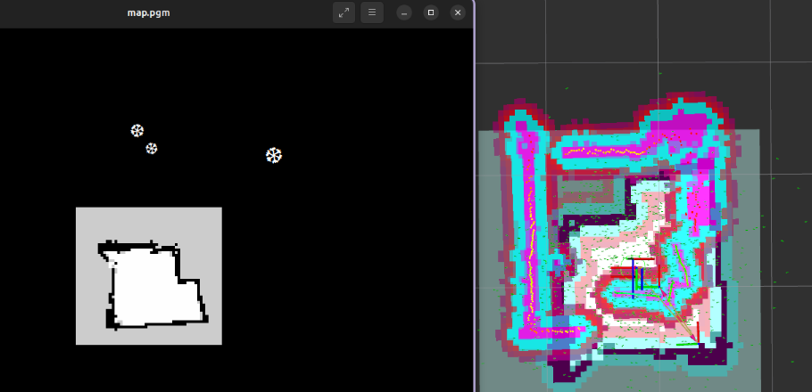
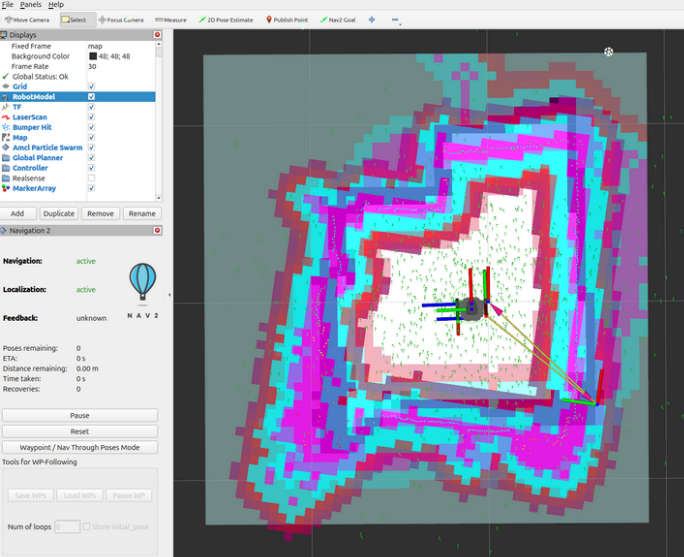
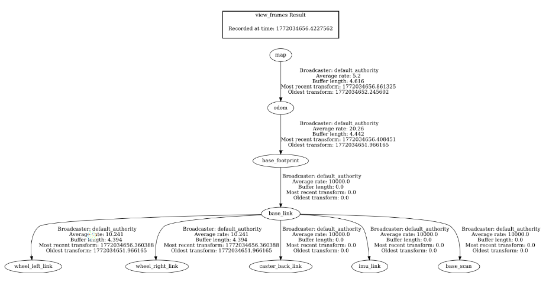

TurtleBot3 Motor Debugging Case Study
This case study documents how I debugged a TurtleBot3 bring-up issue where SLAM and localization appeared broken, but the root cause was ultimately a mechanical installation problem.

Project Overview
While working on TurtleBot3 bring-up in ROS 2 Jazzy, I was trying to get SLAM and localization working reliably. The robot could move, but the system behavior did not look correct in RViz. At first, the symptoms looked like a localization, map alignment, or TF issue.
Instead of assuming it was just a software problem, I tried to document what I was seeing, validate each subsystem, and use those observations to narrow down the root cause.
Main Symptoms Observed
- Map and robot orientation looked inconsistent in RViz
- Pose estimation did not line up with what the robot was actually doing
- When I tried reversing the pose estimate direction, the map overlay appeared to improve
- The robot's physical motion behavior suggested the drivetrain configuration might be wrong
- SLAM and localization reliability could not be trusted until the lower-level issue was resolved
What I Documented in RViz
One of the first major clues came from RViz during localization and Nav2 bring-up. After pose estimation, the map appeared to be rotated about 180 degrees from what I expected. It did not match the original orientation correctly, which suggested that something fundamental was off in the robot’s motion or localization assumptions.

My observation at the time was:
“After pose estimation, it looks to have the map be 180 of the original, it does not match, or something is off.”
Testing the Opposite 2D Pose Direction
To learn more, I tried setting the 2D pose estimate in the opposite direction to see how the map overlay would respond. Interestingly, when I pointed the estimate in the opposite direction, the map appeared to line up better.
That was a strong sign that the robot’s internal understanding of its orientation and motion did not match reality.

What I documented from this test:
“When I set the 2d pose estimation in the opposite direction the map matches.”
“When I do it where it’s actually facing, direction of the lidar, it’s not working.”
“When I make it move in the opposite direction, it actually goes straight because it thinks it’s in that direction??”
This was one of the most important observations in the debugging process. It suggested that the issue was not just a bad initial pose in RViz, but that the robot’s physical motion and its expected frame behavior were effectively fighting each other.
TF Frame Validation
To make sure the system was not failing because of a missing transform or a broken TF tree, I also checked the TurtleBot3 TF frames. This was part of ruling out whether the issue was coming from an obvious frame connectivity problem.

The TF frame check helped confirm that the major frame components were present, so the issue was less likely to be caused by a completely missing transform and more likely related to how the robot was actually moving relative to the expected coordinate frame.
Debugging Approach
I treated this as a system debugging problem and tried to work from the bottom up rather than over-tuning high-level software.
- Observed commanded motion versus physical robot motion
- Validated odometry behavior and directional consistency
- Checked LiDAR and localization behavior in RViz
- Reviewed TF structure to verify major frame relationships
- Compared what the software expected against what the robot was physically doing
Root Cause
The root cause turned out to be mechanical: the Dynamixel motors were installed on the wrong sides of the TurtleBot3 chassis.
- Left and right motor positions were swapped
- The robot's motion behavior no longer matched the expected drivetrain model
- This mismatch propagated upward into odometry, localization, and SLAM behavior
In other words, what looked like a mapping or localization issue was actually caused by the robot being assembled incorrectly at the hardware level.
The Fix
The solution was not a TF change, not a Nav2 parameter tweak, and not a LiDAR issue. I fixed the problem by physically swapping the motor locations to their correct sides on the TurtleBot3 chassis.
After correcting the motor placement, the robot’s movement aligned properly with the expected ROS 2 coordinate behavior, and SLAM began working correctly.
Results
- Robot motion direction matched command intent correctly
- RViz behavior made more sense relative to the robot’s actual pose
- SLAM worked after correcting the motor installation
- The debugging process confirmed the issue was hardware-related, not just software-related
Before vs After
| Category | Before Fix | After Fix |
|---|---|---|
| Map Alignment in RViz | Looked flipped or inconsistent | Aligned more naturally with robot motion |
| 2D Pose Estimation Behavior | Worked better when pointed in the wrong direction | Worked correctly when set to the true direction |
| Motion Direction | Confusing and inconsistent with expectations | Matched commanded and expected behavior |
| SLAM | Unreliable | Functional after hardware correction |
What I Learned
- Documenting unusual behavior in RViz can reveal the real failure pattern
- Not every SLAM or localization issue starts in software
- A drivetrain installation error can affect the full ROS 2 stack
- TF checks are useful for ruling out missing-frame problems during debugging
- Good robotics debugging means comparing physical behavior against software assumptions
Why This Project Matters
This case study shows how I approach robotics debugging as an engineering problem: observe, validate, isolate, and fix the actual root cause. Rather than blindly adjusting software, I worked through the system behavior and traced the issue back to a hardware integration problem.
It highlights practical skills in robot bring-up, ROS 2 debugging, SLAM troubleshooting, frame validation, and hardware-software integration.